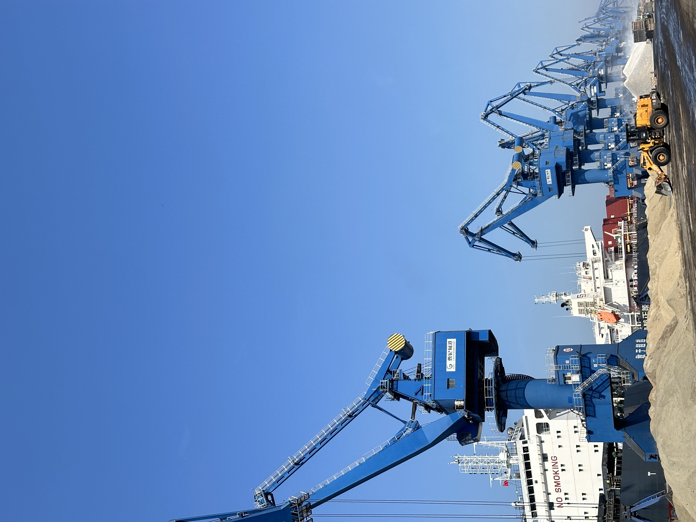

Why S&P Global’s New Cement, Clinker and SCM Assessments Matter for Real Trade Decisions
On 7 May 2026, S&P Global Energy launched 16 new Platts assessments covering cement, clinker, GBFS and related freight across Europe, Asia and the Americas. The move is more than a pricing update: it shows that cross-border trade in cementitious materials is becoming more transparent, more freight-sensitive and more tightly linked to decarbonisation-driven procurement.
为什么 S&P Global 新增的水泥、熟料与 SCM 评估对真实贸易决策很重要
2026 年 5 月 7 日，S&P Global Energy 新推出 16 项 Platts 评估，覆盖欧洲、亚洲和美洲的水泥、熟料、GBFS 及相关运费。这不只是一次价格产品更新，更说明跨境胶凝材料贸易正在变得更透明、更受运费影响，也更紧密地与脱碳导向的采购决策绑定。

A pricing story is not always just a pricing story. On 7 May 2026, S&P Global Energy announced 16 new Platts assessments for cement, clinker, granulated blast furnace slag and related freight. The coverage spans Europe, the Middle East and Africa, Asia, and the Americas. For companies active in bulk construction materials, that expansion is a useful market signal: the trade in cementitious materials is becoming large enough, fragmented enough and strategic enough to require more consistent price references across routes and products.
1. Price transparency is becoming part of the supply chain itself
According to S&P Global, the new assessments are meant to strengthen transparency across key regional markets and to support procurement, budgeting, contract negotiations and risk management. That matters because cement and clinker flows increasingly cross borders in response to regional supply gaps, infrastructure demand and shifting freight economics. Once markets become more route-sensitive, market participants need better references not only for the material itself, but also for where it is moving and at what delivered cost.
For traders, this is another reminder that margins are shaped by information quality as much as by tonnage. A reliable benchmark does not replace deal-making, but it does improve the quality of market conversations. It helps buyers compare origins more clearly, helps sellers explain spreads more credibly, and helps both sides negotiate with a shared understanding of freight and substitution economics.

2. Clinker substitutes are moving closer to the pricing mainstream
One of the most meaningful details in the announcement is that the expanded coverage includes GBFS and related freight, not only cement and clinker. That reflects a wider market shift. As carbon policy, cost pressure and lower-clinker cement strategies spread, supplementary cementitious materials are no longer a side conversation. They are becoming part of mainstream procurement logic. When benchmark providers widen coverage to these materials, they are effectively acknowledging that substitution decisions increasingly depend on transparent, tradable market signals.
This is especially relevant for GBFS and GGBFS suppliers. Buyers are increasingly comparing not just absolute price, but the full delivered proposition: freight, availability, carbon positioning, blending value and consistency. In other words, a slag cargo is being judged less like a niche industrial by-product and more like a strategic input into lower-carbon cement systems.
3. What this says about the next phase of cross-border cement trade
The bigger implication is that cross-border trade in cementitious materials is becoming more structured. Infrastructure demand remains strong in many markets, but environmental policy is now shaping which materials win, which routes stay competitive and which supply chains justify longer-term partnerships. Better benchmark coverage does not create demand by itself. What it does create is a more disciplined basis for planning and negotiation, especially when traders are balancing origin flexibility against freight volatility and carbon-sensitive product choices.

For SENLAN Trading, the takeaway is practical: the market is not only asking who can supply cementitious materials, but who can explain them in freight-aware, benchmark-aware and decarbonisation-aware terms. As price discovery improves across cement, clinker and SCMs, the companies that understand both material value and route economics will be better placed to build trust and win repeat business.
价格新闻并不总只是价格新闻。2026 年 5 月 7 日，S&P Global Energy 宣布新增 16 项 Platts 评估，覆盖水泥、熟料、粒化高炉矿渣以及相关运费，区域横跨欧洲、中东和非洲、亚洲以及美洲。对于活跃在大宗建材贸易中的公司来说，这是一条很有价值的市场信号：胶凝材料贸易正在变得足够大、足够分散、也足够关键，因此市场开始需要跨航线、跨产品的更一致价格参照。
1. 价格透明度正在成为供应链本身的一部分
根据 S&P Global 的说法，这些新增评估旨在增强关键区域市场的透明度，并支持采购、预算、合同谈判和风险管理。这之所以重要，是因为水泥和熟料流向正在越来越多地跨越国界，以应对区域性供应缺口、基建需求以及不断变化的运费经济性。一旦市场对航线变得更敏感，参与者就不仅需要原料本身的价格参照，也需要知道货物在什么路径上流动、以什么到岸成本成交。
对贸易商来说，这再次提醒我们：利润不仅由吨位决定，也由信息质量决定。可靠的基准价格并不会取代交易谈判，但会明显提升市场对话的质量。它能帮助买家更清楚地比较不同产地，帮助卖家更有说服力地解释价差，也让双方在讨论运费与替代材料经济性时拥有更接近的共识基础。
2. 熟料替代材料正在更接近定价主流
这次公告里最有意义的细节之一，是新增覆盖不仅包括水泥和熟料，也包括 GBFS 及相关运费。这反映了更广泛的市场变化。随着碳政策、成本压力和低熟料水泥策略不断推进，补充胶凝材料已经不再只是边缘话题，而正在成为主流采购逻辑的一部分。当基准价格机构开始把覆盖范围扩展到这些材料时，实际上也在承认：未来越来越多的替代决策，将依赖透明、可交易、可对比的市场信号。
这对 GBFS 与 GGBFS 供应商尤其重要。买家越来越多地比较的不只是绝对价格，而是完整的到岸方案：运费、可得性、碳定位、掺配价值以及稳定性。换句话说，一船矿渣正在越来越少地被看作一个“小众工业副产物”，而越来越多地被视为低碳水泥体系中的战略性投入品。
3. 这对下一阶段跨境水泥贸易意味着什么
更大的含义在于，跨境胶凝材料贸易正在变得更有结构。很多市场的基建需求仍然强劲，但环境政策已经开始影响哪些材料更有竞争力、哪些航线仍然有优势、以及哪些供应链值得建立更长期的合作。更完善的基准价格覆盖本身不会创造需求，但它会为规划和谈判提供一个更有纪律性的基础，尤其是在贸易商需要同时平衡产地灵活性、运费波动和碳敏感型产品选择时。
对森蓝贸易来说，最实际的启示是：市场现在不只在问“谁能供货”，还在问“谁能用懂运费、懂基准、懂脱碳逻辑的方式把这批货讲清楚”。随着水泥、熟料和 SCM 的价格发现机制不断完善，那些既理解材料价值、又理解航线经济性的公司，会更有机会建立信任并拿到重复合作。